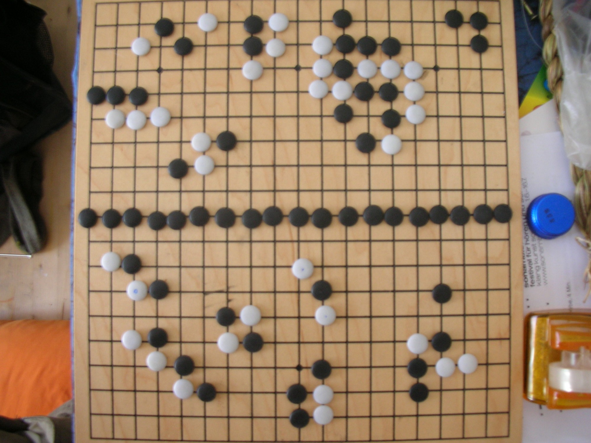
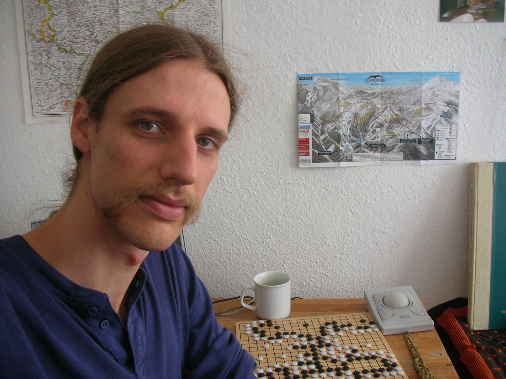
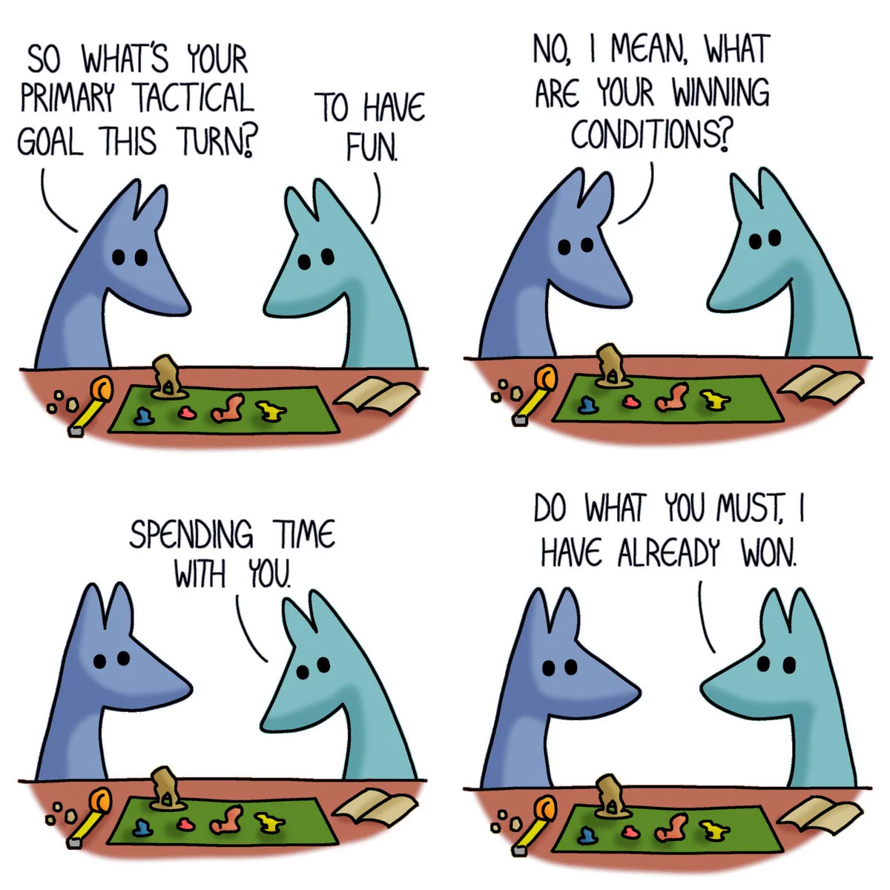

Placeholder: each entry will link to its section's slides.


mike learned go at c-base in berlin in the 00s
follow along today at herebox.org/go
Symmetry
Play at the centre of symmetry.
Sayū dōkei chūō ni te ari (左右同形中央に手あり): where the position mirrors itself, the point in the middle is often the key.
More: Play on the point of symmetry · Don't play on the point of symmetry · Mirror Go
Basic shapes
Ponnuki is worth thirty points.
The number isn't literal: it says how strong the shape is. Good shape is stones working together efficiently; bad shape wastes them.
More: Essential Go proverbs (chapter six, shape) · The bamboo joint may be short of liberties · Shape (Wikipedia)
Groups and two eyes
A group lives with two eyes.
The basic rule of life and death. Stones that connect form a group, and a group that can never be captured is alive.
More: Life and death (Sensei's Library) · Life and death (Wikipedia)
Exchange
Sacrifice plums for peaches.
Furikawari: give up something small to get something bigger. A stone is only worth what it does for the whole board.
Keep learning
Lose your first 100 games as quickly as possible.
Also told as “your first 50 games”. Nobody has traced where it comes from: it's a rule of thumb passed between amateur players.

have fun, offer undos, try multiple paths together, ask questions, chat about other things!